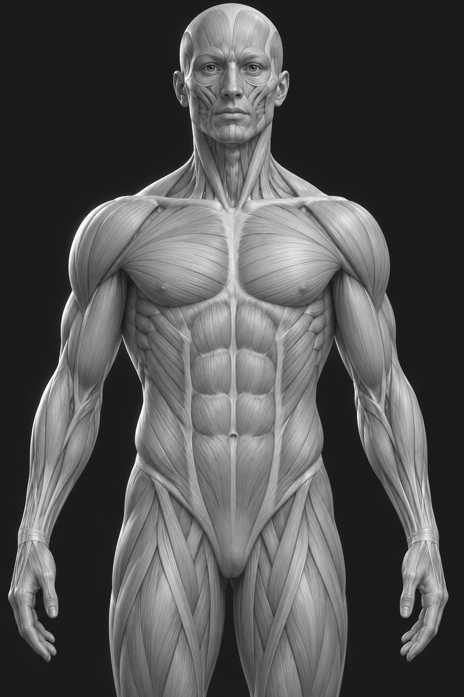

All environment thresholds and time budgets are illustrative profile values; they are not flight or clinical protocols. Hardware names refer to real systems; connections are simulated.

Measurement overview
Curves are synthetic samples; periodic lab tests do not represent continuous sensor data.
Cross-alerts and draft responses
Rules: DEMO-0.1 · unapprovedDemo timer only; it does not advise waiting when emergency symptoms occur.
Dual-destination medical report
Local simulation queueCritical demo events automatically create reports. No clinical decisions or actual external transmissions are made.
Future risks
Hypothetical comparison of continued conditions and reduced exposure. This screen does not predict whether or when a disease will occur, or an individual's probability.
Personal measurement entry
Form / CSV · separate from NASA dataRecords use the crew member and environment selected above. Units are fixed; empty fields are not measurements. Manual entry does not imply a sensor connection or medical verification. Records are stored in an encrypted local file tied to the Windows user.
Bulk CSV import
UTF-8 file; maximum 1 MB / 1,000 rows. Columns: metric,value,unit,measuredAt,source. Use an explicit UTC timestamp: 2026-11-15T08:30:00Z. Records are saved only after all rows pass validation.
Record history
| Measurement | Value / unit | Measurement time (UTC) | Source |
|---|
NASA open data
Environment / research contextNASA data is kept separate from personal medical measurements. Source mission, instrument and timestamps are retained. DONKI provides research and prototyping data; it does not independently support clinical interventions or mission decisions. If a connection fails, older records retain their original dates; no substitute data is fabricated.
DONKI · space weather from the past 7 days
RadLab · ISS / DosTel archive
Not a personal dosimeterDated instrument archive. It does not represent the current dose of the selected astronaut or the Moon/Mars/EVA environment. Unit: µGy/h; not converted to mSv or effective dose.
| Measurement time (UTC) | Instrument | Environment | Absorbed dose rate (µGy/h) |
|---|
Sources: ccmc.gsfc.nasa.gov/DONKI and visualization.osdr.nasa.gov/radlab. Requests contain only public event dates and ISS/DosTel archive dates; personal records are not sent to NASA.
Environment thresholds, assumptions and sources
Session dose budget / personal dose rate calculations are illustrative planning projections, not safe stay durations. CAD measurements are not added directly to career effective dose; an approved radiation model is required.
Lymphocytes and urinary calcium alone cannot establish a diagnosis. OCT does not directly measure intracranial or intraocular pressure. Fluid and exercise interventions require an individual medical plan.
- NASA-STD-3001 V1 4030: career spaceflight effective dose must remain below 600 mSv.
- Astroskin: heart rate / respiratory measurements; sleep quality here is a derived demo score.
- EVA: CAD vacuum compatibility is not assumed; a suitable EVA dosimeter is required.
Full source links and application limitations are in the bundled README.md file.
ORBIT research prototype · NASA environment data, personal records and demos are kept separate. No approved clinical decisions or actual report transmissions.